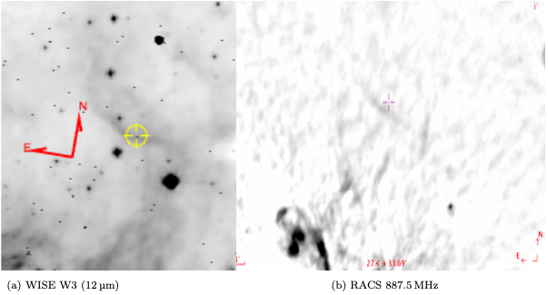

Master’s Student in Astronomy & Astrophysics at the University of Amsterdam
High-energy astrophysics, X-ray binaries, winds & jets, XRISM spectroscopy.
I'm an MSc student in Astronomy & Astrophysics at the University of Amsterdam.
My research interests include ultracompact X-ray binaries, disk winds, jets,
and X-ray spectroscopy with XRISM and XMM-Newton.
Current Projects
Joint XRISM and XMM-Newton Study of the Ultra-Compact X-ray Binary 4U 1916-053
Bow-shock survey of X-ray binaries (WISE + RACS)
Spectroscopic campaign on the colliding-wind binary WR 140
Joint XRISM and XMM-Newton Study of the Ultra-Compact X-ray Binary 4U
1916–053
High-resolution X-ray spectroscopy with XRISM/Resolve and
XMM-Newton/RGS + EPIC-pn to investigate the ionized plasma above
the accretion disk of the ultra-compact neutron-star X-ray binary 4U 1916-053.
The project combines timing-resolved and phase-resolved spectral analysis to
explore how the disk atmosphere and potential winds evolve throughout the orbit.
The modeling employs state-of-the-art photo-ionized plasma codes (following
Boirin et al. 2005) in collaboration with SRON and ESO.
The timing behavior is studied together with spectral evolution to explore
the physical link between the disk atmosphere, ionized absorber, and
the observed variability.
This study is part of my ongoing MSc thesis project at the University of Amsterdam,
jointly supervised by Dr. Nathalie Degenaar (UvA),
Dr. Elisa Costantini (SRON), and
Dr. María Díaz Trigo (ESO Garching).
Bow-Shock Survey of X-ray Binaries
This project investigates possible bow shocks around Galactic X-ray binaries
as tracers of stellar motion and feedback into the interstellar medium (ISM).
Using WISE (12–22 μm) infrared and RACS (887.5 MHz) radio data,
we searched for arc-like structures aligned with Gaia proper motions.
Known bow shocks such as Vela X-1 and 4U 1907+09 were recovered,
while several new infrared arcs were identified.
The most notable case is 4U 1630–47, where a faint arc is visible in both
infrared and radio maps, possibly tracing interaction between jet or disk outflows
and the ISM.

Fig. 2 – 4U 1630–47 candidate bow shock seen in
WISE (12 μm, left) and RACS (887.5 MHz, right) images.
Confirmed cases remain rare, but such structures provide valuable insight into how
compact binaries shape their surroundings through winds and jets.
This project was conducted within the
Astrovaria programme
at the University of Amsterdam, under the supervision of
Dr. Nathalie Degenaar.
WR 140 Spectroscopic Campaign
Multi-night observations with HERMES/Mercator to study
wind acceleration, clump dynamics, and LDI signatures.
Although this observing proposal was not selected, the submitted document
outlines the intended strategy and scientific motivation.
[View Proposal PDF]